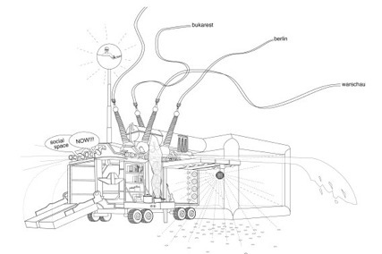
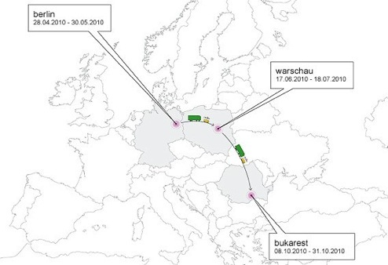
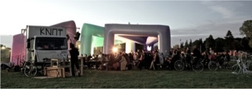
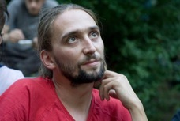
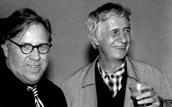
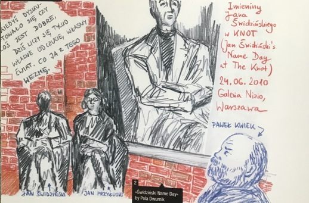

Camera is running. „Context…. from Latin contextuare means <knotted>. We are knotted“, says Swidzinski. These words sound like commissioned for this shooting. How did Jan know that the project is going to be named „The Knot“? Incredible. And then Kamil walks right into the set. Again.
October the 8th. Bucarest by night. The Knot opening party is on in the club. The next day we can see a station: a postmodern (or altermodern) gypsy camp, artists’bivouac in Charles Park’s gates. In the base – it should be called this way – there is cooking going on without a break. No matter if it’s architects, musicians, filmmakers, curators, pass-by-ers, misfits, kids, performers, technicians – they all eat, that’s for sure!
Kamera kręci. „Kontekst… contextuare, z łaciny oznacza zaplątanie, jesteśmy zaplątani“, mówi pan Janek. Słowa padają jak na zamówienie. Jakby Świdziński specjalnie do filmu na okazję Knota. Niebywałe. I wtedy Kamil jak zwykle wchodzi w kadr.
Aftermath Knota trwa jeszcze około miesiąca. Postprodukcja pokaże co to wogóle było. Książka, film, zdjęcia. Ale to, co delikatne, ulotne, zostaje – tyle że gdzie indziej.
0. For the whole KNOT Bucarest there will be a open reading room (reading table/tent) on he work of Marcel Duchamp. Basic library to take a look, seat and read for a while. There will be a moderator and a person available „to talk to/argue/silently sit next to“ during or afer the reading. „The only way to make music is to study Duchamp“ – said Cage. We will follow neodada and fluxus and we will examine the results.



Jan Przyluski about The Knot
(Polish version follows)

We are knotted, tangled in relations, we set bonds with others, bonds with the world. These links are multiple, they split and merge, interrelate and spiral. Occasionally a singularity is born. It happens that a tie is formed, a plexus or a coil – twisted around many times. And when we put a stream of energy to run through this coil, it is going to behave like a condensator. Well – the laws of physics do adopt to human relationships. The KNOT is a condensator of this kind, it is a true singularity.
Record
Nonspecified time, around September 2009. At the beginning – as always – there is a conversation. The invitation is pronouned, delicate, not too strict, open. And maybe by this fact alone more attractive. „It would be cool to talk about contextualism during the Knot“. Kuba knew what he wants and had this soft way to execute it. „Why don’t we invite Jan Swidzinski?“ First, the plan was for me to talk about contextual art and we wanted to invite Jan for the Free/Slow University of Warsaw. The goal: merging of the worlds. My favorite. In the meanwhile I droped by for barcamp on a subject of „Social Body“ with Critical Practice team. I checked out how it is, and … it was great. Next was one of the Readings for Art Workers – Herer on Deleuze in Bec Zmiana Foundation. Ok.
After some time of relaxation I received an email with a problem The Knot’s crew had (to solve): the Elephants. Special meeting was arranged to discuss what to do with gigantic air-pomped plastic shapes the Knot had travelled with, totally not usefull, not protective, not easy… The preparations for the KNOT in Warsaw had just started. Berlin’s experience has uncovered all weak points to take care of.
Mokotowskie Fields, good vibrations, sun, lots of people. Strong images remain in memory: great number of little silver airplanes flying above our heads. And this special equipment for anarchist training: a copy of a metro gate prapared to practice jumping over it when there is no ticket. The weather was perfect – it must have been the time when someone took this famous panorama picture.
Next stop: Cwel’s Shit. Urinow. Knot boys had arrived from Berlin with wind-dried faces like sailors, accustomed to colds and rains. The view from the hill was great. But the next day – disaster. Imagine terribly cold, windy and rainy place, with people hiding in beach style chairs covered their bodies with small Ikea blankets. During the lecture by an Austrian curator talking about experimantal music, Cage, noise and electronics, the rain was so storng that he had to talk from the inside of the car sfinishing phrases from behind an umbrella. Tough conditions. Only the strongest remained. „You don’t need to have crowds. You got quality audience here“ – Joanna Warsza was enchanting the spreaker. Next day some of the people stayed in bed, but it was great anyway.
One thing was clear to me: outdoor on the Hill is not good for Swidzinski. Namesday event is coming in two days – what to do? Where to set it? A gallery, a bar? In Praga, in Lopez place that is in Miroslaw Nizio Gallery. Bene.
June the 23. Jan’s namesday. (Yes, we celebrate things like that in Poland.) I packed a film projector, champagnes, cake, and went to pick up the hero. We showed „The Differences“, and this short filmed specially for the Knot, and there was some of my talking and a discussion. Jan Swidzinski’s words form the moment will be remambered as a part of the history of art. Among the guests there was Szreder nad Romik, Herer and Hirszweld, Misiuna and John, Kasia Jaskiewicz, Basia Gutt, Paweł Kwiek – an impressing meeting of the worlds. Happiness. There were even some people that I wouldn’t ever imagine that will come. The only strange feeling I had was caused but the fact that I received more presents then Swidzinski. But, anyway, after a week Jan told me how happy he was. „This was my first fullypaid “ – he joked and added how happy he was to be able to talk at once to one of the best deleuzianists, performance artists, independent curators, young theorists of art and the Okultura team all together.

The third part of the Knot/Warsaw was in Praga. Once a place of knifes flying low, now an independent artists‘ studios neighborhood. Malgorzata Bochenska as a DJ. Wow! It was on the 18th of July. My birthday and Roni Lahav‘s. Dinner in the Knot transformed to a huge bash.
Bucarest. Kuba’s concept: let’s get there like nomads. Let’s ride from Poland to Romania. Who did not do it, should really regret. Opulance versus experience. This travel changed from a long, tiring ride through all these damaged roads to a marrymaking trip in the car with two superinteligent beautiful girls, sociologist Joanna Erbel and Kasia Jaskiewicz, dancer and multimedia artist, my partner in this project. On the road we manage to collect some magic mushrooms, I visited a hawk aviary, and we passed by Budapest. As we left behind the mountains of Transylvania, concrete highway to the capital started.
We came here with double-action plan. First is to set a Duchamp Mini Library – so we seat, read and breathe. We put the books on public display, we talk with anyone that comes to talk, we let others read. We were quoting Cage who said that the only way to make music is to study Duchamp. Second, was to test todays possibility of making a collective cinema, to examine the famous Shared Culture idea, check if it is not just another utopian fib from the seventies. Invitations, announcements and … nobody came.
Instead an alternative film was made – non-movie (just like taoist non-action), the most nonavant-gard film I have ever seen. Who does not believe is welcome to watch. Entitled: „Film and paradox“.

In the next day’s website news, we put a large citation from Timothy Leary. Rest of the text is just an excuse. Duchamp Mini Library starts to attract freaks. It’s echoing. On its second day, one Romanian performer acts roght in front of our set, making us his scenography. He has a urinal, spits with ketchup, holds a piece of paper with some famous philosophers‘ names written on it. Total puzzle.
There are just married couples coming to Charles Park to be photographed after the wedding. They come with all the other people, parents, grooms, dresses and ties. Does it matter that this monument in the background is primarly a grave of squareheaded politicians? Not really. What a symbol of power! We have those couples in the set everyday, a real duchampian readymade just for us: Brides. I even played a quick chess game with one of them. Not-to-forget moment. As always in situations like that, a cinematographer filmed everything but … forgot to push the REC button. Well: it must have been too intensive for video.
The day of the climax was set by the karaoke afternoon. After a so-to-say-under- control time, the situation started to develop. Gypsy boys from the neighborhood, around twelve to fifteen, took over a mike. First was freestyle hiphop, later some classical chants. Incredible. They standing in a circle, two og them get inside and start competing to have a better solo. Others clap hands and jig. Rythms are so complicated that one can see that boys live with the music everday at home. The temperature is getting high. When it gets dark, I turn on the Balkan Beat Box record and Kasia starts do dance. And when Kasia is dancing, you can‘t watch and stand; everybody is dancing. Young gypsy boys dance and slap Knot’s girls butts. I grab one of the filming lamps and spin it as fast as possible for the glory of this celebration of joy.
After this, even a stone Dimitri on the corner of our street illuminated with green light seems to turn into the Green Man.

Well, the contexts are manifold. To much for 20 thousand signs. The effects – visible and invisible. The way back – it’s for another story.
The Knot’s aftermath lasts about a month or more. The postproduction will show what it really was. The book, the film, some pictures. All these subtle, ephemeral things, these fleeting moments do rest – it’s just that they rest somewhere else.
Dopowiem: można powiedzieć, że to zaplątanie do wszystkie nasze związki, relacje, nasze węzły, powiązania z innymi, ze światem. Tych relacji jest wiele, łączą się, rozwidlają, zapętlają, wirują. Miejscami gdzieś w tym kłączu tworzy się osobliwość. Powstaje splot, węzeł, zwój – zakręcony parę razy wkoło. A kiedy przez taki zwój popłynie prąd, powstaje w tym miejscu kondensator. Ot – prawa fizyki przełożone na rzeczywistość międzyludzką. Knot to taki kondensator energii, osobliwość.

Relacja
Nieokreślony czas, około września 2009. Najpierw, jak zwykle, rozmowa. Padła zaproszenie, delikatne, niezobowiązujące, otwarte. A przez to jeszcze bardziej zachęcające. „Fajnie by było, gdyby w Knocie pojawił się kontekstualizm“. Kuba wiedział czego chce, ale miał miekki sposób działania. „A możeby tak zaprosić Świdzińskiego?“. Z początku plan był taki, żebym opowiedział o kontekstualizmie w i żebyśmy zaprosili pana Jana do Wolnego Uniwesytetu Warszawy. Cel: łączenie światów. Mój ulubiony. W między czasie wpadłem na Bar Camp „Social Body“ z Critical Practice. Zobaczyłem jak to działa. Fajnie. Potem: jedna z Czytanek - Herer/Deleuze w Bęcu. Super.
Po jakimś czasie przyszedł mail z problem (do rozwiązania): Słonie. Zapowiedziane zostało spotkanie-debata – co robić z dmuchanymi, niewymiarowymi, nieużytecznymi, niechroniącymi … Zaczynały się przygotowania do Knota w Warszawie. Berlin ujawnił wszystkie czułe punkty.
Pola Moko, dobra atmosfera, słońce, tłumy. W oczy rzucały się latające srebrne samolociki i instalacja-bramka do metra, sprzęt do ćwiczeń anarchistycznych czyli skakania bez biletu. Pogoda idealna, to chyba wtedy ktoś cyknął to piękne zdjęcie-panoramę.
Kupa Cwela, czyli Kopa Cwila. Na Urynowie, Ursynowie. Chłopcy z Knota przyjechali z Berlina ogorzali od wiatru, z twarzami jak marynarze, zahartowani zimnem i deszczem. Widok świetny. Ale następnego dnia – masakra. Z jednej strony: ziąb, deszcz, wiatr, z drugiej: leżaczki i kocyki z Ikei. Kiedy mówił Austriacki kurator o ekperymentalnej muzie, Cage’u, noise’ie i elektronice, to tak zacinało, że chował się w aucie i tylko na koniec zdania wyzierał zza parasola. Trudne warunki. Zostali najtwardsi. „You don’t need to have crowds. You got quality audience here“ – Asia Warsza pocieszała prelegenta. Parę osób następnego dnia legło w wyrach, ale i tak było świetnie.
Jedno był pewne: outdoor na Kopie nie jest dla pana Janka. A za dwa dni imieniny – co robić? Sala, galeria, bar? Na Pradze u Lopeza, czyli u Mirka Nizio. Spox.
23 czerwca. Imieniny Jana. Spakowałem projektor, papiery, szampany, tort, i pojechałem po solenizanta. Pokazaliśmy film „the differences“, fragment specjalnie skręcony dla Knota, potem było moje gadanie i dyskusja. Wypowiedź pana Jana przejdzie do historii sztuki. Na sali Romik i Szreder, Herer i Hirszweld, Misiuna i John, Kasia Jaśkiewicz, Basia Gutt, Paweł Kwiek – niesamowite połączenia światów. Wielka radość. I jeszcze przyszło parę osób, których bym sie w życiu nie spodziewał. Tylko głupio mi było, bo dostałem więcej prezentów niż pan Jan. Najważniejsze że po tygodniu, podczas odwiedzin był wyraźnie zadowolony. „To pierwsze imieniny od osiemdziesięciu siedmiu lat na których zarobiłem“, żartował i cieszyliśmy się, że mógł mówić jednocześnie do artystów, prawdziwie niezależnych kuratorów, najwybitniejszego polskiego deleuzjanisty, czołowych polskich performerów, młodych teoretyków sztuki i ekipy z Okultury.
Trzecia część Knota na Pradze. Kiedys dzielnica nisko latającyh noży, dziś
Małgosia Bocheńska wodzirejem na całego. Everybody dance now. Jest18 lipca, urodziny, moje i Roni Lahav. Kolacja w Knocie zamienia się w niezłą rozpierduchę.
Bukareszt. Koncept Kuby: robimy karawanę. Kto nie jechał, niech żałuje. Wygoda versus przygoda. Droga do Bukaresztu z nużącej podróży kiepskimi drogami zmieniła się w przygodę poznawczą, w samochodzie z dwoma pięknymi i superinteligentnymi kobietami, socjolożką Asią Erbel oraz Kasią Jaśkiewicz, tancerkę i artystką multimedialną, moją partnerką w tym projekcie. W trasie zebraliśmy trochę magicznych grzybów na Czantorii, odwiedziłem sokolarnię i zahaczyliśmy o Budapeszt.
Mijając góry Transylwanii wjechaliśmy na betonowy highway do stolicy.
8 październik. Bukareszt nocą, trwa balanga w klubie. Nazajutrz ukazuje się naszym oczom ponowoczesny tabor cygański, obozowisko artystów w parku Karola. W bazie – tak trzeba mówić o stacji Knota w parku – gotowanie nonstop. To się zawsze sprawdza. Czy to architekci, rzeźbiarze, muzycy, filmowcy, kuratorzy, przechodnie, świrusy, dzieciaki, performerzy, technicy – na pewno jedzą.
Przyjechaliśmy z planem dwudzielnym. Po pierwsze prowadzimy Mini Bibliotekę Duchampa – siedzimy, czytamy, oddychamy. Wystawiamy książki na widok publiczny, rozmawiamy, dajemy innym czytać, dajemy innym żyć. Cytowaliśmy Cage’a: Jedynym sposobem na robienie muzyki jest studiowanie Duchampa.
Po drugie (cztery oddzielne dni) testujemy dzisiejszą możliwość filmu składkowego z czasów Kultury Zrzuty, sprawdzamy czy to nie utopijna ściema. A jednak! Zapraszamy, ogłaszamy i … nikt nie przyszedł.
Zamiast tego powstaje nie-film (jak taoistyczne nie-działanie), najbardziej nieawangardowy jaki kiedykolwiek widziałem. Kto nie wierzy, zapraszam do obejrzenia. Tytuł: „Film i paradoks“.
W programie następnego dnia zamieszczam tekst, który jest właściwie pretekstem do wrzucenia sporego fragmentu z Timothy Leary’ego. Mini Biblioteka Duchampa przyciąga coraz więcej freaków. Jest rezonans. Drugiego dnia jeden rumuński performer robi coś biorąc nas za dekorację swojej akcji. Ma pisuar, pluje keczupem, jakieś wybitne nazwiska myślicieli ma wypisane na kartce. Kompletna enigma.
Do Parku Karola przyjeżdzają pary młode fotografować sie po ślubie. Z całą obstawą, świadami, rodzicami, welonami i koronkami. Co z tego że w tle jest mauzoleum-grób dygnitarzy. Ale jakiż to symbol władzy! Codziennie więc mamy prawdziwie duchampowskie readymade’y: Panny Młode. Z jedną zagrałem nawet w szachy. Moment nie-do-zapomnienia. Jak to zwykle w takich sytuacjach bywa, operatorka wszystko sfilmowała, ale zapomniała włączyć przycisku REC. Odpowiedź: zbyt intensywnie było, żeby się mogło nagrać na video.
Klimax wyznacza dzień z karaoke. Po części w miarę kontrolowanej zaczyna się jazda. Cygańscy chłopcy, koło 12-15 lat, dają czadu. Najpierw rapowy freestyle, potem klasyczne pieśni. Niezamowite. Stoją w kręgu, dwóch w środku wyrywa sobie mikrofon i przejmuje solo. Pozostali klaszczą i podrygują. Rytmy są nieraz tak trudne, że widać chłopcy żyją z muzyką na codzień. Temperatura ciągle wrasta. Kiedy zapada zmrok włączam Balkan Beat Box, Kasia zaczyna trańczyć. Chłopcy w tańcu zaczynają klepać po pupach dziewczyny z Knota. Biorę w ręce reflektor i kręcę nim jak tylko się da ku chwale radosnej iluminacji.
Po wszystkim nawet podświetlony na zielono Dmitri na rogu ulic zamienia się w Green Mana.
Konteksty są mnogie. Nie zmieści się na 20 tysięcy słów. Efekty widzialne i niewidzialne. Droga powrotna – to już inna historia.
Film and Paradox
Jan Przyluski
0. Two meetings on “freak culture”, visionary-surreal-erotic-psychodelic-abnormal-bizarre-occult and paradoxical contemporary art. Discussion and presentation of selected recent appearances in the field.
0.New approach to contextual cinema. 10 minutes. Video.
Experimental movie with the artists invited by the Knot-Bucarest project to form a visual material on hidden, abnormal character of artists’ work. It is to correspond with the Knot as a whole.
[“Film And Paradox” is going to be a contextual work but at the same time will be a play with one-goal-focused production model. The film will be prepared in regular three step process: STEP 1. 3 days of filming, STEP 2. 2 days editing (in the place - editing work will be open for public to form an editing workshop for volunteers), STEP 3. show of a rough cut. The film is a simulation of community art films from the seventies (like Polish collective ciema [film składkowy] made during “Shared Culture” [Kultura Zrzuty]) and freak cinema.
Duchamp Mini-Library Installation
Materials
15 HDV video cassettes
Books on Marcel Duchamp (to stay with the Knot Project for future work)
1.The Writings of Marcel Duchamp, by Marcel Duchamp, Michel Sanouillet, and Elmer Peterson
2.Dialogues With Marcel Duchamp, by Marcel Duchamp, Michel Sanouillet, and Elmer Peterson
3.Marcel Duchamp, by Robert Lebel
4.Duchamp: A Biography, by Calvin Tomkins
5.Marcel Duchamp: The Art of Chess, by Francis M. Naumann
6.Marcel Duchamp. Artist of the Century, by Rudolf E. Kuenzli, Francis M. Naumann
7.Marcel Duchamp (illustrated), by Anne D'Harnoncourt
Persons
Jan Przyluski + 1 peformer: Katarzyna Jaśkiewicz)
Paradox and Film1: Knotland.webarchive
Paradox and Film:2 Knotland.webarchive
Kuba Szreder, współtwórca The Knot
Joseph Kosuth i Jan Świdziński
Jan Świdziński, Puste gesty
Pola Dwurnik, “Jan Świdziński, Jan Lubicz Przyłuski, Paweł Kwiek - Imieniny Jana” (rysunek z książki “The Knot. An Experiment on Collaborative Art in Public Urban Spaces”, Jovis, Berlin 2011)
Wystawa >>
THE KNOT. MOBILE UNIT
2010
Berlin-Warszawa-Bukareszt